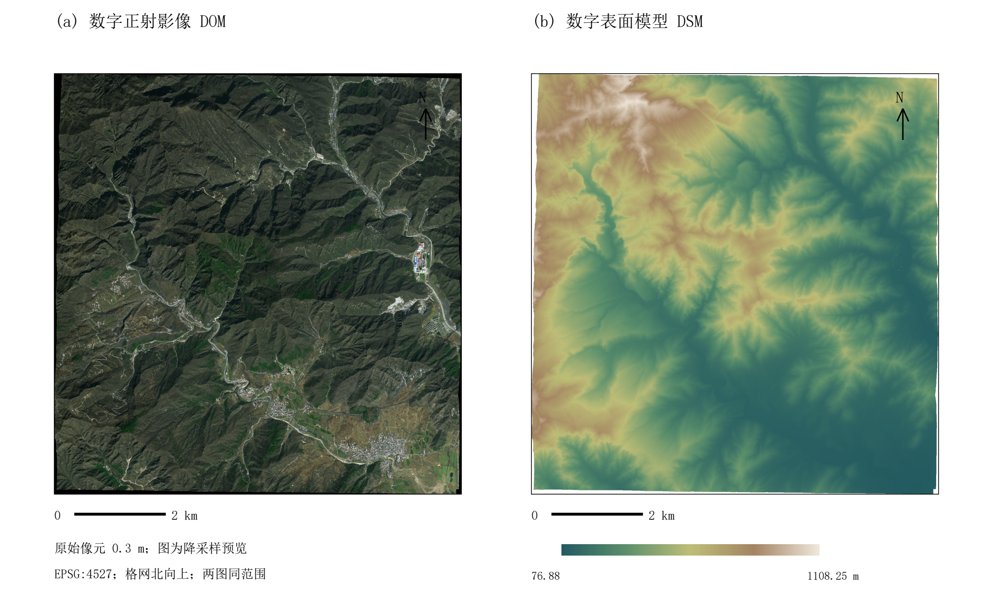

SHANGFANGSHAN · FANGSHAN · BEIJING
北京上方山
碑刻与古迹 GIS
从碑文、地方志、项目坐标记录与遥感模型中，建立可追溯的文化遗产空间资料入口。

DOM / DSM · 0.3 mSPATIAL RECORDS
坐标记录与可信状态
点位按资料所述来源分组。坐标用于核查与展示，不把记录的小数位数解释为测量精度。
项目所述实测推算位置参考锚点
EVIDENCE FIRST
证据分层
每项结论保留来源与限制，让历史解释、空间定位和数字展示各自承担合适的功能。
历史文献
碑刻录文与《上方山志》用于确认名称、沿革和相对方位，不直接生成精确坐标。
空间记录
项目坐标单独保存来源和状态；缺少原始质量记录时，不宣称厘米级或毫米级精度。
影像与模型
DOM、DSM 与实景三维用于背景表达和模型组织，历史建筑复原仍需独立形制证据。
OPEN OUTPUTS
研究成果
正式文档放在 docs/，交换数据放在 data/，网页入口保持轻量。
ROADMAP
从资料原型走向可靠平台
- 对象核对补齐点号、照片、采集方式和坐标质量记录。
- 空间检核核对影像、控制点与文物点所属测区及叠加关系。
- 内容关联用稳定标识连接实体、碑文、图像和模型版本。
- 交互扩展在证据完整后增加搜索、筛选、导出和三维浏览。